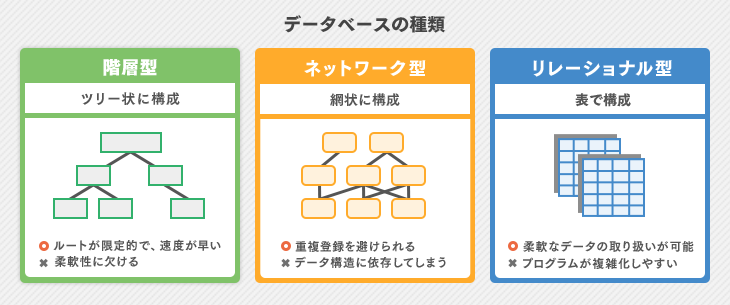
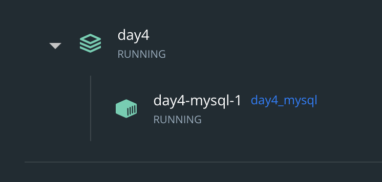
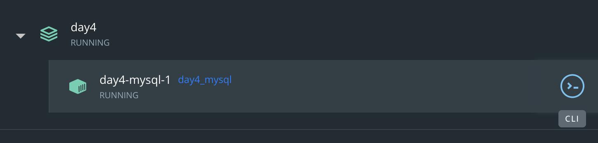

今回は「SQL+Docker」を扱う。
- Docker上にMySQLコンテナを立ち上げる
- Dockerのコンテナに入る方法
- SQLの基本
について学びます。
実際に使うのはday5の「Linebot」です。


データベースを操作する言語である。
データベースは何かたくさんの情報が入る箱だと思っていただきたい。
データベースがなければ、あらゆるサービスは成り立たず、データベースとSQLは非常に重要である。
例えばwebサービスの例だと、
- サインアップでデータベースに個人情報を登録
- ログイン時に、その情報と一致しなければ、ログイン拒否
また、ゲームでよくある「フレンドコード」は、一意なIDになっており、こうした一意な情報を元にプレイヤーを管理していたりする。
パスワードを忘れたことはないだろうか。パスワードを再登録するために、メールアドレスが聞かれるが、これも入力したメールアドレスが、「データベースに保存されているか」などを判断している。
そして、データベースには種類がある。

参考: https://static.it-trend.jp/article/img/89-0066_1.png
データベースの例
- PostgreSQL - リレーショナル型. 無償で使え、小規模システムに使われる
- MySQL - リレーショナル型. OSSで基本は無料
- SQLite - リレーショナル型. OSSでコンパクト
他にもあります。
今回はMySQLを使っていきます。
そしてSQLという言語を「〇〇.sql」に書いたり、データベース上で書くことになります。
以下のコマンドを「〇〇.sql」に書いたり、データベース上に書いて実行する。
「末尾に;」をつけることに注意しよう。
「mysql>」はコマンドラインでmysql上で操作していることを示しています。
データベース作成
CREATE DATABASE データベース名;例 「test」というデータベース作成
mysql> CREATE DATABASE users;データを選択する
USE データベース名;例 「test」データベースを使うことを示す。
mysql> USE users;データベースの中身を確認
SHOW DATABASES;例 データベースはいくつあるだろうか
mysql> SHOW DATABASES;
+--------------------+
| Database |
+--------------------+
| information_schema |
| mysql |
| performance_schema |
| sys |
| test |
+--------------------+
5 rows in set (0.00 sec)テーブルを作成 (USEで使うデータベースを指定後)
CREATE TABLE テーブル名(
カラム名 型 その他,
カラム名 型 その他
);例 「test」データベースに新しく、「users」テーブルを作成
mysql> create table item_category (
id int auto_increment not null primary key,
name varchar(32) not null
);※小文字でもコマンド認識されます。
idは整数値で、勝手に加算されて(入力不要になる)、必ず情報が入っており(not null)、重複しない値である。
nameは32文字までの文字列で(varchar(32))、必ず情報が入る。
テーブルにデータ追加
SELECT 列名 [表示用列名] FROM テーブル名; 例 usersというテーブルにyamada, tanaka, Bana7を追加
mysql> insert into users(name) values ("Yamada"), ("Tanaka"), ("Bana7");データ検索(SLECT)
SELECT 列名 [表示用列名] FROM テーブル名; 例 usersというテーブルから全て(*)の情報を選択、加えてidだけをみる。
mysql> SELECT * FROM users;
+----+--------+
| id | name |
+----+--------+
| 1 | Yamada |
| 2 | Tanaka |
| 3 | Bana7 |
+----+--------+
3 rows in set (0.00 sec)
mysql> select id from users;
+----+
| id |
+----+
| 1 |
| 2 |
| 3 |
+----+
3 rows in set (0.00 sec)まず、Dockerコマンドを使う際は、DockerDesktopを起動しましょう。
画面左下のアイコンの色が緑色になっていれば起動できている。
今回は、Docker-compose.ymlとDockerfileを用いたコンテナ構築を行う。
Docker-compose.ymlとは
コンテナを複数管理できるファイルである。
役割として家づくりで換言すると、お家を建ててくれます。
お家内装はDockerfileに任せます。
Dockerifleとは
コンテナ(お家)の内装を書きます。
今回扱う例で言うと、「MySQL」を使うための設定をします。
SPSS2022/day4を作成
以下のファイルを作成しよう
SPSS2022/day4/docker-compose.yml
version: "3"
services:
mysql: #コンテナ名
build:
context: ./mysql/ #mysqlにある
dockerfile: Dockerfile # Dockerfileでビルドします
volumes: # データを保存する(ローカルのどのファイルを:コンテナのどのファイルに)
- ./mysql/initdb.d:/docker-entrypoint-initdb.d
environment: #環境変数 今回はMySQLのパスワードをrootにした
- MYSQL_ROOT_PASSWORD=root
expose:
- 3306
SPSS2022/day4/mysql/my.cnf
[mysqld]
character-set-server=utf8
[mysql]
default-character-set=utf8
[client]
default-character-set=utf8my.cnfはMySQLの設定ファイル
SPSS2022/day4/mysql/Dockerfile
FROM mysql
COPY ./my.cnf /etc/mysql/conf.d/my.cnf
CMD ["mysqld"] # mysqlを起動してもらう(正確にはmysqlのデーモン起動)SPSS2022/day4/mysql/initdb.d/users.sql
CREATE DATABASE test;
USE test;
CREATE TABLE users (
id int auto_increment not null PRIMARY key,
name varchar(32) not null
);Dockeではinitdb.dにおいたsqlファイルを勝手に実行してくれます。
コンテナ起動
$ docker compose up -ddocker composeはdocker-compose.ymlがあるファルダ上で使える。
必ずday4ファルダ上で実行(cd コマンドで移動してからコマンド使う)
コンテナが起動していることを確認
コマンド上及び、DockerDesktopで確認する。
$ docker ps
CONTAINER ID IMAGE COMMAND CREATED STATUS PORTS NAMES
35e899702abd day4_mysql "docker-entrypoint.s..." About an hour ago Up About an hour 3306/tcp, 33060/tcp day4-mysql-1コマンド上で確認する方はこの時NAMESに注目する。この例ではNAMESは「day4-mysql-1」である。

コンテナに入る
コマンドで入る方は、先のNAMESを用いて、
$ docker exec -it day4-mysql-1 /bin/bash
bash-4.4# bash-4.4# のようになっていればOK
DockerDesktopの方は

CLIと表示されているボタンをクリックする。
新しくシェルが立ち上がります。
dockerコンテナからmysqlにログインする
bash-4.4# mysql -u root -p -h 127.0.0.1
Enter password: 今回の場合"root"と入力
Welcome to the MySQL monitor. Commands end with ; or \g.
Your MySQL connection id is 10
Server version: 8.0.30 MySQL Community Server - GPL
Copyright (c) 2000, 2022, Oracle and/or its affiliates.
Oracle is a registered trademark of Oracle Corporation and/or its
affiliates. Other names may be trademarks of their respective
owners.
Type 'help;' or '\h' for help. Type '\c' to clear the current input statement.
mysql> mysql>となればOK
テーブルが作成されているか確認し、使うことを示す。
mysql> となっていれば準備完了です。あとはここでsqlコマンドを入力するだけです。
mysql> show databases;
+--------------------+
| Database |
+--------------------+
| information_schema |
| mysql |
| performance_schema |
| sys |
| test |
+--------------------+
5 rows in set (0.00 sec)
mysql> use test
Reading table information for completion of table and column names
You can turn off this feature to get a quicker startup with -A
Database changed
mysql> Database changedとなっていれば、OKです。
この状態で確認課題を行ってください。
以下の条件を満たすテーブルをtestというデータベースに作成しよう
-
usersテーブルに任意のデータをinsertしよう
-
insertしたデータを表示する
ヒントは今回使うSQLコマンドのところを参考にしてください。
確認できたらpushしてください
今日はDocker上にMySQL環境を構築して、軽く弄ってみました。
このままでは、不便なので、5日目には実際にLinebotとデータベースを連携させます。